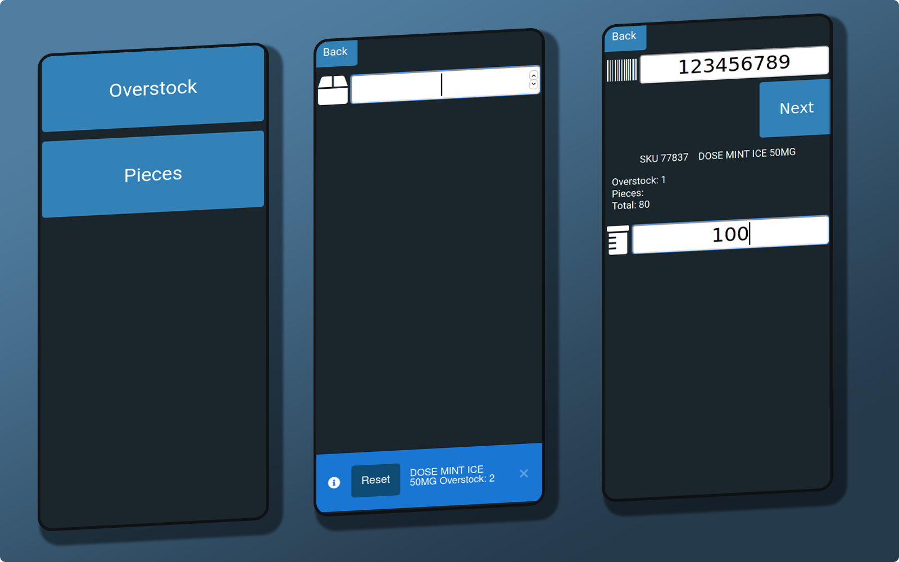
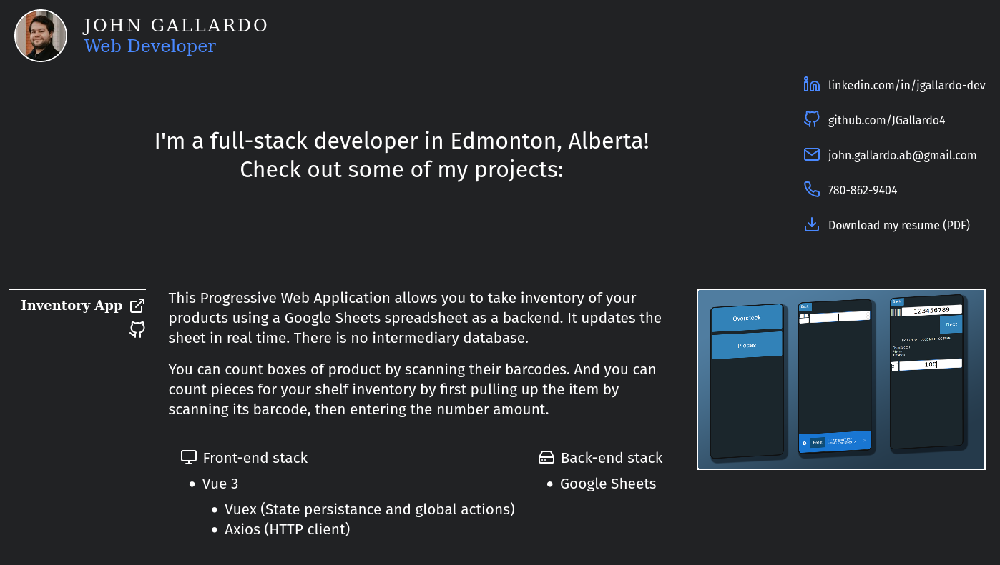
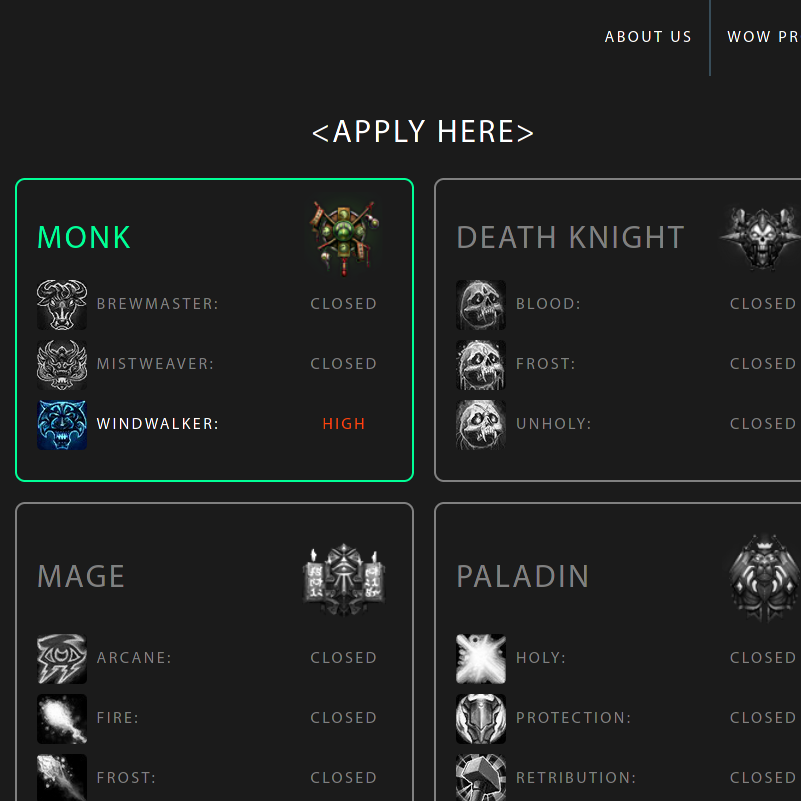
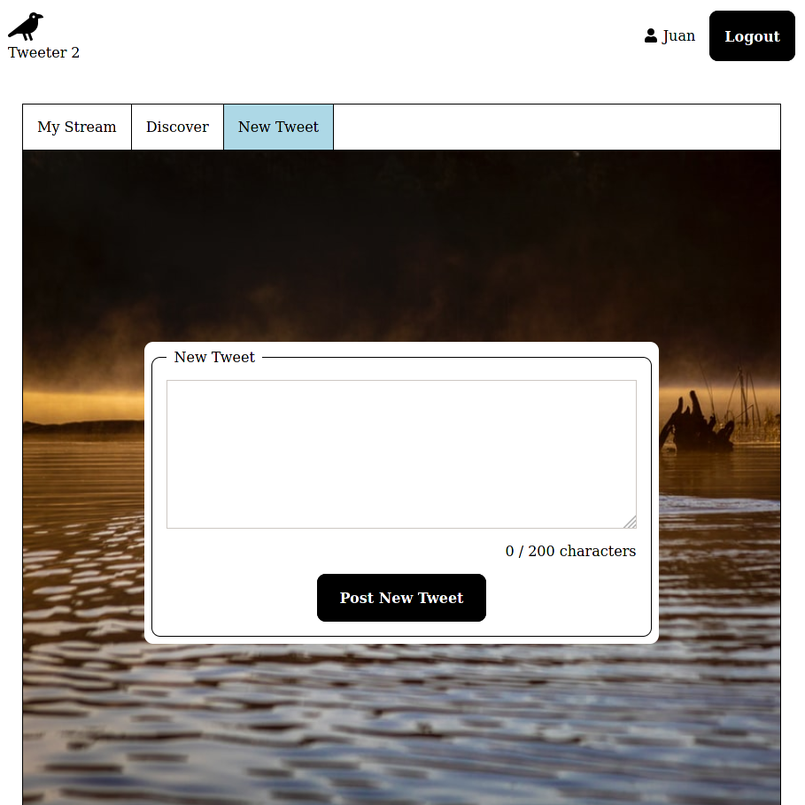
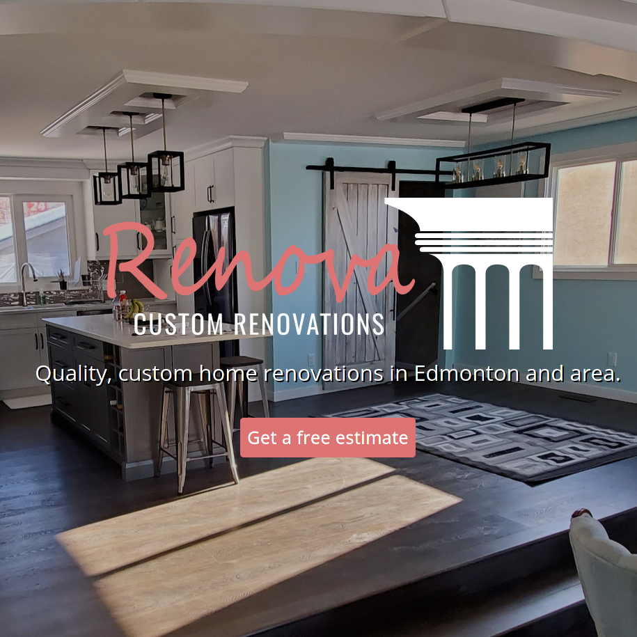
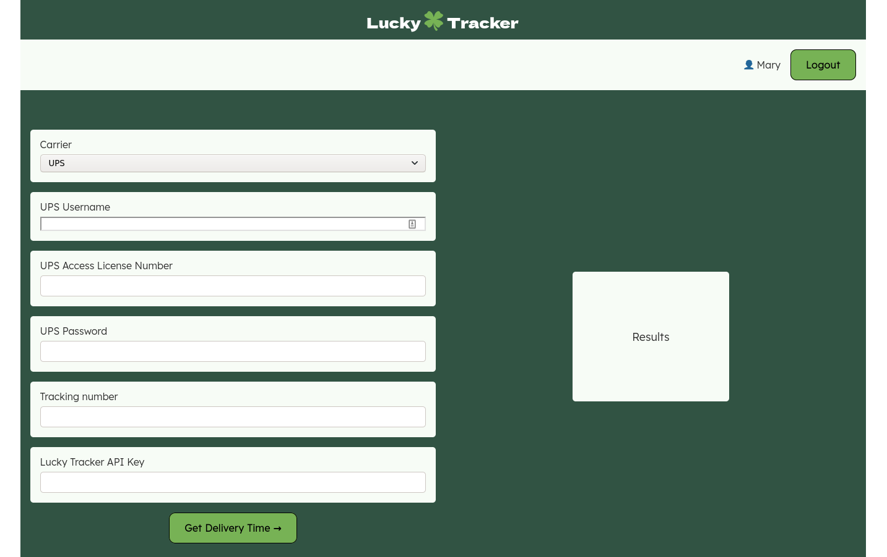

I'm a full-stack developer in Edmonton, Alberta!
Check out some of my projects:
-
linkedin.com/in/jgallardo-dev
-
github.com/JGallardo4
-
juan.gallardo.ab@gmail.com
-
780-862-9404
-
Download my resume (.docx)
This Progressive Web Application allows you to take inventory of
your products using a Google Sheets spreadsheet as a backend.
It updates the sheet in real time. There is no intermediary database.
You can count boxes of product by scanning their barcodes. And you can
count pieces for your shelf inventory by first pulling up the item by
scanning its barcode, then entering the number amount.
Front-end
stack
- Vue 3
-
Vuex (State persistance and global actions)
-
Axios (HTTP client)

You are here
.
This site is made with an emphasis
on typography and a minimalist design.
Another goal for this project was clean and organized HTML and CSS
source
code.

In the MMORPG
World of Warcraft,
groups of players are called guilds. This website was built for one
such guild, with players in various parts of North America.
This site was built for one such guild called Ascended. Through this
site, prospective members can see at a glance which positions are
available, watch streams from guild members, and learn all about the
guild.
Front-end
stack
- ASP.NET Core MVC (C#)
- JQuery (Javascript)
Back-end stack
- ASP.NET Core MVC (C#)
- MariaDB (SQL)
- Entity Framework Core
- NginX
- Linux

This Twitter clone showcases the development of a separate front and
back
ends that communicate via a (somewhat) RESTful API.
Front-end
stack
- Vue 3
-
Vuex (State persistance and global actions)
-
Axios (HTTP client)
Back-end stack
- Flask (Python)
- MariaDB (SQL)
- Apache2
- Linux

This site was commissioned by a local home renovation business, Renova
Contracting. Special attention was given to user experience and SEO.
This project included the redesign of the company logo, as well as a
full-page image slideshow for the home page.
Front-end
stack
- Inkscape (Vector logo design)
- ASP.NET Core MVC (C#)
- JQuery (Javascript)
Back-end stack
- ASP.NET Core MVC (C#)
- MariaDB (SQL)
- Entity Framework Core
- NginX
- Linux

This site allows the user to determine whether their shipment was
delivered, and how many days it took for it to be delivered. Available
carriers are UPS and FedEx.
The back-end acts as a middle-man between the front-end and either FedEx
or
UPS' servers. For UPS, it uses their RESTful API, directly. On the other
hand, in order to consume FedEx's SOAP XML API, the back-end uses a
Python
library called
python-fedex.
Front-end
stack
- Vue 3
-
Vuex (State persistance and global actions)
-
Axios (HTTP client)
Back-end stack
- Flask (Python)
- MariaDB (SQL)
- Apache2
- Linux
